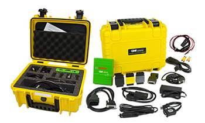

reconstruction & technical services
NAR-LLC OFFERS EXTENSIVE
SERVICES IN THE FIELD OF
CRASH INVESTIGATION
CRASH DATA RETRIEVAL
using BOSCH Technology
NAR partners have been certified in using the CDR system since its early days over 10 years ago. Now almost all new vehicle models on the road are supported by this system and many of older vehicle generations can be imaged as well. A complete list of supported models can be found on the official Crash Data Retrieval site.
The following information is listed on the Crash Data Group website found here.
Event Data Recorder (EDR) capabilites have become increasingly important in crash investigations because they store potentially important data that may be very useful in evaluating car crashes.
EDR is a function of the vehicle’s airbag control module and other sensors related to the safety and engine control systems of each vehicle.
For claims adjusters and insurance industry as a whole, the data that the CDR software can retrieve has become an additional tool to use along with the interpretation by a trained and experienced reconstructionist.
It is important to understand that these reports must be reviewed by an experienced reconstructionist and trained CDR analyst. The data contained in the reports, while valuable, must be verified by analyst using physical evidence and analysis from the original or followup investigations.
The insurance industry is using this technology more and more to analyze claims. Check out the video below for a description of the application of CDR data for these claims. Further information can be found on the CDR website here.
Note: Video below has loud audio beginning.
It is apparent that the CDR Tool is effectively being used and becoming a necessary part of evidence collection for fraudulent claims.
Reconstruction Services
ANALYSIS
case merit analysis
INITIAL CASE RESEARCH TO EXAMINE WHAT TYPE OF INVESTIGATION IS NEEDED, IF ANY REVIEWING PRESENT CASE FACTS AND VALIDITY REVIEWING OPPOSITION'S CLAIMS OR ACCURACY OF THEIR REPORTS
general reconstruction
OVERVIEW OF CASE, ANALYSIS, COMPLETE REPORT
advanced reconstruction
SAME AS GENERAL INCLUDING ANIMATIONS, 3D DIAGRAMS AND OTHER SPECIALTY SERVICES
SCENE INVESTIGATION
photography
videography
roadway friction testing
3d scale scene mapping with total station
FOR THE CREATION OF SCALE DRAWINGS FOR ANALYSIS AND VISUAL AID CREATION A CAD MAP IS REQUIRED FOR THE CREATION OF ANIMATIONS
TIME/DISTANCE TESTING AND RESEARCH
SIGHT DISTANCE TESTING AND ANALYSIS
OUR 3D SCALE MAPS AND SCENE TESTING CAN DETERMINE SIGHT LINES AND RELATED TIME/DISTANCE ISSUES
VEHICLE INSPECTIONS
FULL VEHICLE INSPECTION AND REPORT
photography
videography
crush measurments
FOR THE CREATION OF SCALE DRAWINGS FOR ANALYSIS AND VISUAL AID CREATION
TIRE EXAMINATION
INTERIOR/TRACE EVIDENCE INSPECTION
RESTRAINT INSPECTION/USE DETERMINATION
EXHIBITS
FULL CASE PORTFOLIO
COMPUTER GENERATED SCALE DIAGRAMS (2D AND 3D LARGE FORMAT)
POWER POINT PRESENTATIONS
VIDEO PRESENTATIONS
FOR THE CREATION OF SCALE DRAWINGS FOR ANALYSIS AND VISUAL AID CREATION
ANIMATIONS (2D AND 3D)
A CAD MAP IS REQUIRED FOR THE CREATION OF ANIMATIONS
SPECIALTY SERVICES
AERIAL PHOTOGRAPHY
CRASH DATA RETRIVAL (AIRBAG MODULE DOWNLOAD) See above
POWER POINT PRESENTATIONS
COMMERCIAL VEHICLE INSPECTIONS
THIS INCLUDES ECM (ENGINE CONTROL MODULE) DOWNLOADS
The CAD ZONE Software
NAR has instructors that have extensive classroom instruction experience. NAR offers The Cad Zone Crash Zone software training through the Nebraska Law Enforcement Training center on an annual basis based on demand. We can also create custom courses that include Total Station integration so that the student is able to operate a Total Station instrument properly and then use the CAD software needed to create scale diagrams and perform analysis of the collision.